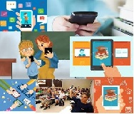

Para muitos Professores o Celular em sala de aula é um vilão a ser combatido,
para os alunos uma distração em qualquer momento.

Para nós é uma ferramenta poderosa de aprendizagem. Estamos aqui para ajudar você professor,
a utilizarem melhor esta ferramenta que pode estar sendo mal usada e mal
vista e com ela retirar o melhor de seus alunos.